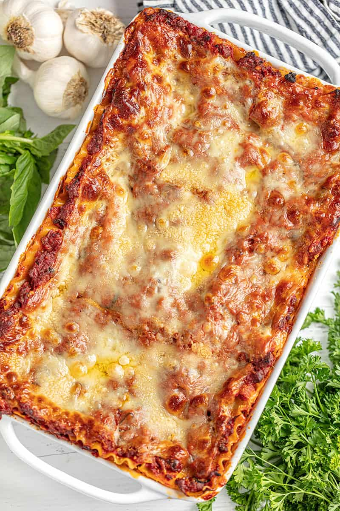

The Most Amazing Lasagna Recipe
The Most Amazing Lasagna Recipe is the best recipe for homemade Italian-style lasagna.
The balance between layers of cheese, noodles, and homemade bolognese sauce is perfection!
Prep Time: 1 hr 30 mins
Cook Time: 50 mins
Total Time: 2 hrs 20 mins
Servings: 8 Servings
Ingredients

- 453.59 g sweet Italian sausage
- 453.59 g lean ground beef
- 1 white onion diced
- 5 cloves garlic minced
- 1 can crushed tomatoes
- 2 cans tomato paste
- 1 can tomato sauce
- 117.5 g white wine
- 2 tablespoons white sugar
- 12 g chopped fresh basil
- 1 teaspoon fennel seeds
- 1 teaspoon ground oregano
- 0.5 teaspoon salt
- 0.25 teaspoon ground black pepper
- 15.12 g chopped fresh parsley
- 453.59 g lasagna noodles
- 850.49 g ricotta cheese
- 2 tablespoons chopped fresh parsley
- 1 egg
- 0.5 teaspoon salt
- 0.13 teaspoon ground nutmeg
- 453.59 g thinly sliced mozzarella cheese about 24 slices
- 100 g freshly grated Parmesan cheese
Instructions
- In a large pot over medium heat, add in ground sausage and ground beef. Use a spoon to
break up the meat into small pieces. Add in onion and garlic and cook until meat is well
browned, stirring constantly. Stir in sugar, fresh basil, fennel, oregano, 1/2 teaspoon
salt, pepper, and 1/4 cup chopped parsley. Pour in crushed tomatoes, tomato paste, tomato
sauce, and wine*. Stir well and bring to a simmer. Reduce heat to low and simmer 1-4 hours,
stirring occasionally.
- Meanwhile, place lasagna noodles into the bottom of a pan. Pour hot tap water directly over
the noodles, making sure the pasta is completely immersed in the water. Let them soak for 30
minutes, then drain and discard water.
- In a mixing bowl, combine ricotta cheese with egg, remaining 2 tablespoons parsley, 1/2
teaspoon salt, and nutmeg. Refrigerate until ready to assemble lasagna.
- Preheat oven to 375 degrees. Lightly grease a deep 9×13 pan.
- To assemble, spread about 1 cup of meat sauce in the bottom of the prepared pan. Place 4 noodles
on top. Spread with 1/3 of the ricotta cheese mixture. Top with 1/4 of mozzarella cheese slices.
Spoon 1 1/2 cups meat sauce over mozzarella, then sprinkle with 1/4 cup parmesan cheese. Repeat
layering two more times to create three complete layers. To finish, place a final layer of pasta,
topped with another 1 cup of meat sauce to cover the pasta. Top with remaining mozzarella and
Parmesan cheese. Cover loosely with aluminum foil.
- Bake in preheated oven for 25 minutes. Remove foil, and bake an additional 25 minutes to allow
cheese to brown. Serve hot.
Notes
*The white wine can be replaced with red wine, chicken broth, or beef broth.
© The Stay at Home Chef